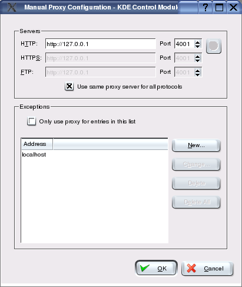

Configurações
para Vários Browsers
Configuração
do JAP para o Konqueror
Para configurar o JAP para o
Konqueror, siga os seguintes passos:
1.) No menu "Settings" escolha o submenu "Configure
Konqueror...". Na nova janela, escolha a categoria "Proxy".

2.) Em "Proxy", seleccione "Manually specified
settings".
3.) Agora o servidor proxy deve ser definido. Clique no
botão "Setup" relacionado com "Manually specified settings".
Em "HTTP","http://127.0.0.1" e a porta "4001". Marque a caixa "Use
same proxy server for all protocols" para usar
também o JAP para todos os outros protocolos.

Nota:
Se configurar uma porta de escuta diferente
no JAP, tem de introduzir também aqui essa porta, em vez da
4001.